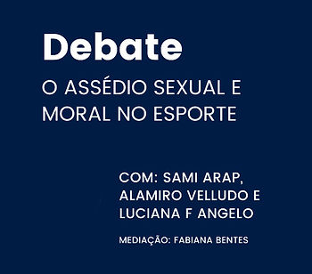
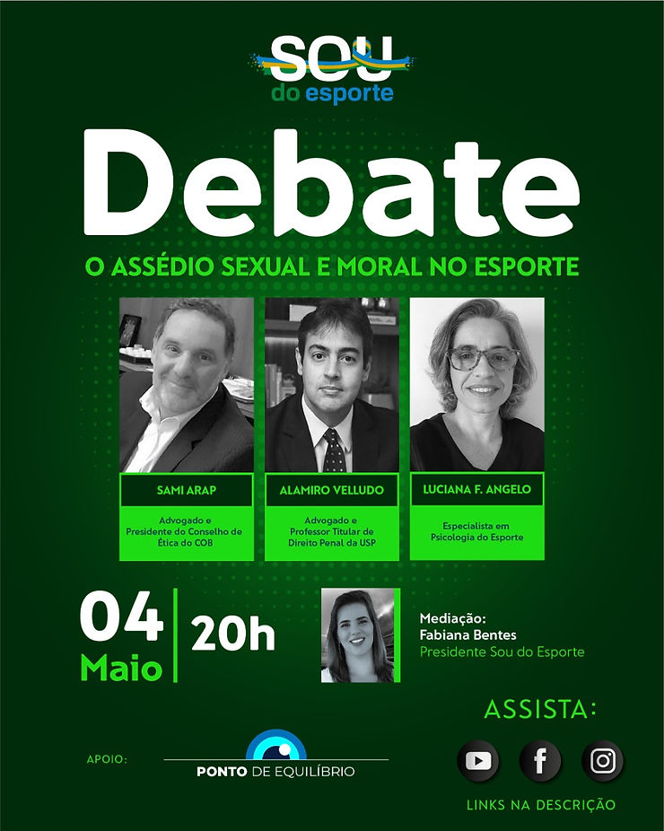

A psicóloga do esporte e secretária da ABRAPESP Luciana Ferreira Angelo, o advogado criminalista Alamiro Velludo, e o presidente do conselho de Ética do COB Sami Arap falaram sobre as consequências do assédio no ambiente esportivo, no dia 4 de maio de 2021, no debate promovido pelo SOU DO ESPORTE. (clique na imagem e assista)
A ABRAPESP indicou a Prof.Dra. Luciana Angelo pelo seu trabalho com o conteúdo, no Curso de Aprimoramento e Especialização em Psicologia do Esporte do Instituto Sedes Sapientiae, e no de Aperfeiçoamento coordenado pelo Centro de Referência às vítimas de Violência (CNRVV) do Instituto Sedes Sapientiae (clique aqui) .

O tema é fundamental para o campo do esporte. Nesse sentido, temos denúncias realizadas no exterior e no Brasil, nos últimos anos, que viabilizaram campanhas e cursos de prevenção. A temática é tratada pelo Comitê Olímpico do Brasil tanto no curso para jovens e como para membros da Comissão Técnica, diz Luciana
Em março de 2021 foi lançada pelo Ministério Público do Trabalho a campanha “Atletas adolescentes – Dignidade é nosso Esporte”.
Todos os setores da sociedade buscam informação e caminhos para o fim dos abusos. Em 02 de maio, dia Nacional de Combate ao Assédio Moral, a OAB/DF lançou uma campanha contra assédio sexual e moral entre profissionais da advocacia. A iniciativa foi da Comissão da Mulher Advogada da Ordem, que considerou os dados da pesquisa global do IBA alarmantes: 1 em cada 3 advogadas e 1 em cada 14 homens já foram assediados sexualmente; e 1 em cada 2 mulheres entrevistadas e 1 em cada 3 homens já sofreram assédio moral. No Brasil, 23% entre os entrevistados diz ter sofrido algum tipo de assédio sexual e 51% revelou já ter sido vítima de bullying. (clique aqui e acesse a pesquisa)
18 de maio é o Dia Nacional de Combate ao Abuso e à Exploração Sexual Infantil.
Esperando todos hoje no debate, Luciana Angelo indica leitura das matérias de Breiller Pires, no jornal El Pais, que aborda o assunto https://brasil.elpais.com/autor/breiller-silva-pires/
Clique aqui e acesse o debate